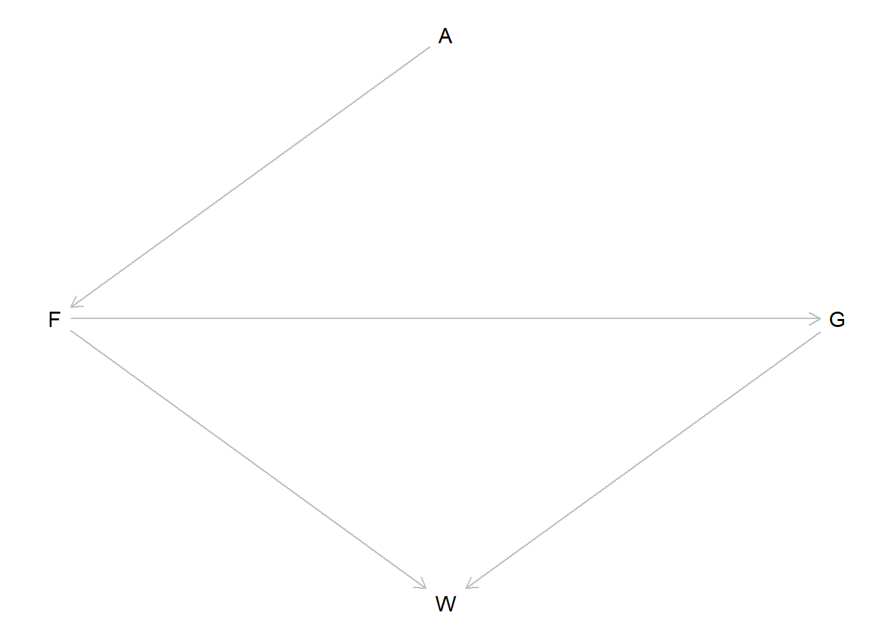
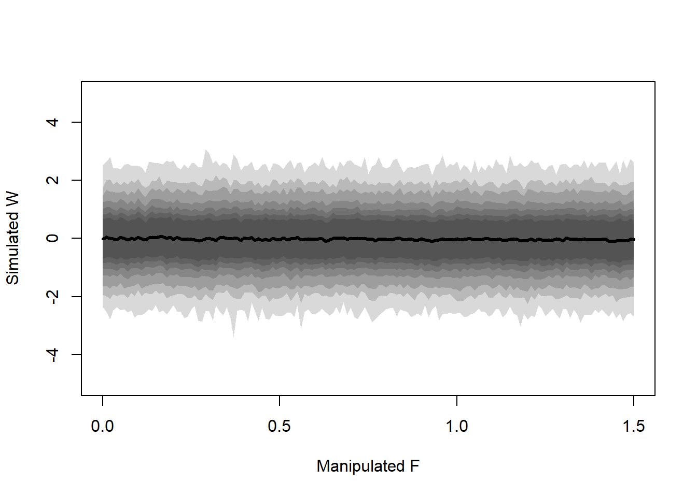
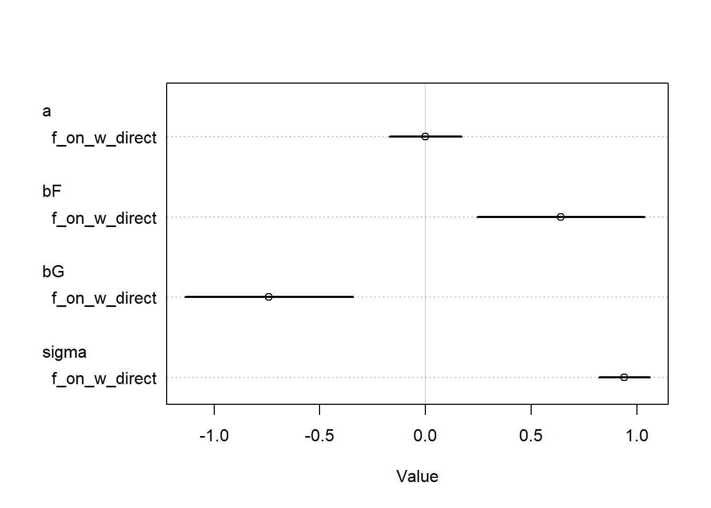

This homework covers the material from Lectures 5 and 6, and the content from book Chapters 5 and 6. The questions are reproduced almost identically from Richard McElreath’s original assignment, I did not write them. I only wrote these solutions.
From the Homework:
The problems are based on the same data. The data in data(foxes) are 116 foxes from 30 different urban groups in Engalnd. These fox groups are like street gangs. Group size (groupsize) varies from 2 to 8 individuals. Each group maintains its own (almsot exclusive) urban territory. Some territories are larger than others. The area variable encodes this information. Some territories also have more avgfood than others. And food influences the weight of each fox. Assume this DAG:
library(dagitty)dag <- dagitty::dagitty("dag { A -> F -> G -> W F -> W }")# Specify instructions for plotting the DAG, then do thatdagitty::coordinates(dag) <-list(x =c(A =2, F =1, G =3, W =2),y =c(A =1, F =2, G =2, W =3) )plot(dag)

where \(F\) is avgfood, \(G\) is groupsize, \(A\) is area, and \(W\) is weight.
1. Use the backdoor criterion and estimate the total causal influence of \(A\) on \(F\). What effect would increasing the area of a territory have on the amount of food inside of it?
There are no confounds and there is in fact nothing else on the causal pathway from \(A\) to \(F\). So these are the only two variables that need to be in this model. I’ll do a simple linear regression with just some default priors to estimate this.
# Setuplibrary(rethinking)
Loading required package: cmdstanr
This is cmdstanr version 0.8.1.9000
- CmdStanR documentation and vignettes: mc-stan.org/cmdstanr
A newer version of CmdStan is available. See ?install_cmdstan() to install it.
To disable this check set option or environment variable cmdstanr_no_ver_check=TRUE.
Loading required package: posterior
This is posterior version 1.6.0
Attaching package: 'posterior'
The following objects are masked from 'package:stats':
mad, sd, var
The following objects are masked from 'package:base':
%in%, match
Loading required package: parallel
rethinking (Version 2.40)
Attaching package: 'rethinking'
The following object is masked from 'package:stats':
rstudent
data(foxes)# Standardize the variablesD <- foxes |> dplyr::select(F = avgfood,A = area,W = weight,G = groupsize ) |> dplyr::mutate( dplyr::across(dplyr::everything(), standardize) ) |>as.list()set.seed(54564)# The modela_on_f <- rethinking::quap(flist =alist( F ~dnorm(mu, sigma), mu <- a + b * A, a ~dnorm(0, 5), b ~dnorm(0, 5), sigma ~dexp(1) ),data = D)rethinking::precis(a_on_f)
mean sd 5.5% 94.5%
a -5.554240e-09 0.04328528 -0.06917824 0.06917822
b 8.830368e-01 0.04347305 0.81355842 0.95251509
sigma 4.662142e-01 0.03051589 0.41744386 0.51498444
So we see that the estimate of the total causal effect of \(A\) on \(F\) is \(0.88\) with an \(89\%\) CI of \(0.81\) to \(0.95\). Let’s plot the distribution really quick just to get a better idea.
The density is centered around 0.88, with our model identifying a range of plausible values for around 0.81 to 0.95. In general, we can observe a positive effect of area size on the amount of food available in a territory. This makes sense, because if all of these foxes are from around the same region, there should be a similar amount of food available across the area, so increasing the size of the territory increases the amount of available food. This might not have been the case if the foxes were from varying environments, where a large territory might ne necessary for a fox in a food-poor environment to have the same food availbility in a food-rich environment.
2. Infer the total causal effect of adding food \(F\) to a territory on the weight \(W\) of foxes. Can you calculate the causal effect by simulating an intervention on food?
Again, we don’t need to control anything to estimate this total causal effect. \(G\) is a mediator of the relationship of \(F\) on \(W\) and \(A\) is a cause of \(F\) so we don’t need to control for either of these. I’ll fit another model with nondescript priors.
set.seed(100)f_on_w_total <- rethinking::quap(flist =alist( W ~dnorm(mu, sigma), mu <- a + bF * F, a ~dnorm(0, 1), bF ~dnorm(0, 1), sigma ~dexp(1) ),data = D)f_on_w_total |> rethinking::coeftab() |> rethinking::coeftab_plot()
From the model estimates, we can see that, in general, the effect of food availibility on fox weight does not seem to be very strong. The point estimate is slightly negative, with the credible interval reflecting a wide range of potential values of either direction.
Now we can simulate an intervention on the amount of food. That is, we’re estimating \(f(W \mid \text{do}(F))\) by simulation. First we will draw the DAG for when we \(\text{do}(F)\). In this DAG, we delete all arrows into \(F\) (because we are controlling the value of it).
do_f <- dagitty::dagitty("dag { F -> G -> W F -> W }")# Specify instructions for plotting the DAG, then do thatdagitty::coordinates(do_f) <-list(x =c(F =1, G =3, W =2),y =c(F =2, G =2, W =3) )plot(do_f)
Since \(G\) is a pipe, we can ignore simulating \(G\) and instead only simulate \(F\). We’ll simulate this intervention by controlling for the value of \(F\) and using the posterior samples to calculate the values of \(W\) for each \(F\).
# SetupN <-1e3set.seed(1234819084)# Extract the posterior samplespost <- rethinking::extract.samples(f_on_w_total, n = N)# Values of F to simulatef_vec <-seq(0, 1.5, 0.01)# Container for resultsout <-matrix(nrow = N, ncol =length(f_vec))# Simulate the resultsfor (i in1:length(f_vec)) { out[, i] <-with( post,rnorm(N, a + bF * f_vec[[i]], sigma) )}# Summarize the output matrixplot(NULL,xlim =c(0, 1.5), ylim =c(-5, 5),xlab ="Manipulated F", ylab ="Simulated W")# for (i in 1:length(f_vec)) {# lines(x = f_vec, y = out[i, ], col = rethinking::col.alpha("black", 0.05))# }for (p inc(seq(0.5, 0.9, 0.1), 0.95, 0.99)) { interval <-apply(out, 2, rethinking::PI, prob = p) rethinking::shade(interval, f_vec)}lines(x = f_vec, y =colMeans(out),type ="l", col ="black", lwd =3,)

3. Infer the direct causal effect of adding food \(F\) to a territory on the weight \(W\) of foxes. In light of your estmiates from this problem and the previous one, what do you think is going on with these foxes?
Based on the DAG, to get the direct causal effect of foxes, we also need to stratify by \(G\) in our model. So we will fit that model first.
set.seed(100)f_on_w_direct <- rethinking::quap(flist =alist( W ~dnorm(mu, sigma), mu <- a + bF * F + bG * G, a ~dnorm(0, 5), bF ~dnorm(0, 5), bG ~dnorm(0, 5), sigma ~dexp(1) ),data = D,control =list(maxit =500))f_on_w_direct |> rethinking::coeftab() |> rethinking::coeftab_plot()

OK, now let’s compare the coefficients of the two models.
So when we only stratify by \(F\), we don’t see an effect. But when we stratify by \(F\) and \(G\), we see an effect of both variables! The optional problem sort of spoiled this, but it seems like the most likely explanation here is negative confounding by an unobserved variable. When we don’t control for \(G\), the confounder still has a backdoor pathway through to \(W\), but when we control for \(G\) and \(F\) simultaneously, the backdoor path is closed and the effect of \(U\) will be absorbed into the estimated effects of \(F\) and \(G\) (as it should be). So this is an example of a masked relationship.
4. Suppose there is an unobserved confound that influences \(F\) and \(G\), saying \(\boxed{U}\). Assuming this is the correct DAG, again estimate both the total and direct causal effects of \(F\) on \(W\). What impact does the unobserved confound have?
I didn’t finish this question because I didn’t know how, and apparently it is a trick question because it is not possible to get the total causal effect of \(F\) (since \(U\) is unobserved). That makes me feel better. We would estimate the direct causal effect of \(F\) like we already did under this model.